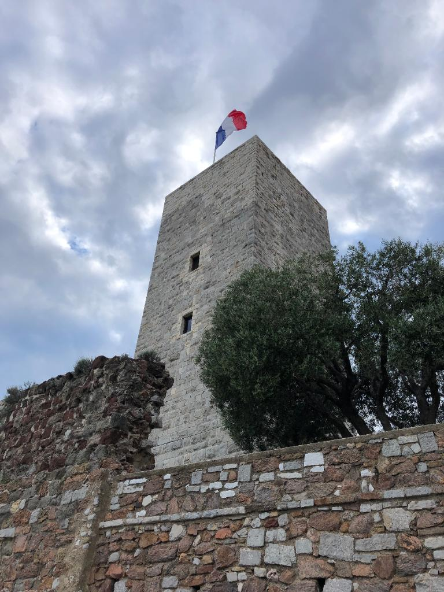
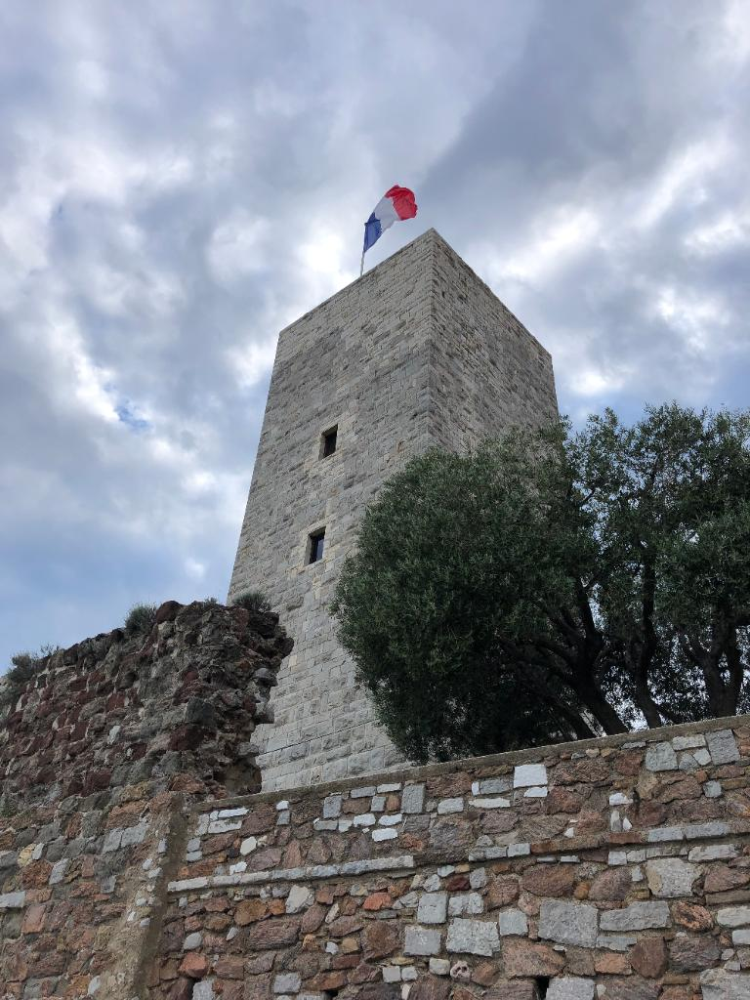

Le Musée des Explorations
du Monde

Le Musée du Masque de Fer
et du Fort Royal
Ecomusée Sous-Marin
par Jason Decaires Taylor

Situé sur les hauteurs du quartier historique de Cannes, le musée des explorations du monde, anciennement musée de la Castre, vous propose un voyage à travers l'art primitif, l'orientalisme en passant par les antiquités. Vous y découvrirez également des expositions temporaires… Le baron Tinco Martinus Lycklama à Nijeholt (c'est son nom complet), d'origine néerlandaise, vécut à Cannes à la fin du XIXe siècle. Amateur éclairé pour les antiquités, l’orientalisme, l’ethnographie et l’art primitif, il légua en 1877, ses collections à la Ville de Cannes. En 1919, la commune de Cannes acquit l’ensemble des bâtiments sur les hauteurs du Suquet afin d’y loger son musée, encore installé à l'époque à l’hôtel de ville. Cet édifice conventuel est construit sur un plan carré, comme celui d’un château médiéval avec donjon, et il intègre dans son enceinte défensive un corps de logis et une chapelle. Au milieu de la cour centrale, se dresse une tour carrée dont la hauteur pouvait permettre le guet. Nommé alors musée de la Castre il devient le musée des explorations en monde, au tout début de l'année 2021. Prélude à l’entrée du musée, un jardin planté d’essences méditerranéennes, notamment de grands pins parasols, vous accueille et vous ouvre une vue dégagée vers les plages du midi. Au milieu du circuit du musée, vous pourrez accéder à la cour intérieure du château, au centre duquel fut édifiée la tour de guet. Après avoir gravi les 109 marches de ce magnifique édifice médiéval, vous pourrez profiter d’un point de vue à 360° sur Cannes et le littoral. Dans une suite de petites salles entourées de jardins, sont présentées les collections d’art et d’objets d’Océanie, de l’Himalaya, d’Arctique, un riche fonds d’antiquités méditerranéennes et de céramiques précolombiennes. Trois salles consacrées à l'Orientalisme et aux arts de l'Iran s’ouvrent sur la cour du musée et la tour médiévale carrée (109 marches) d’où l’on découvre un admirable panorama.
Au large de Cannes, sur la première des îles de Lérins, l'île Sainte-Marguerite, le musée du Masque de fer et du Fort Royal occupe la partie la plus ancienne du Fort Royal de type Vauban.
Ce fort, classé monument historique, est bordé de pins et d'eucalyptus et surplombe la mer. Vous pouvez y visiter les anciennes prisons d'État et la célèbre cellule du Masque de fer
où le mystérieux prisonnier fut incarcéré durant onze années, mais aussi, le mémorial huguenot et les peintures murales réalisées par Jean Le Gac sur le thème du peintre prisonnier.
Dans les citernes romaines et au premier étage sont présentés le matériel archéologique sous-marin provenant des épaves romaine et sarrazine de la Tradelière et du Batéguier (céramiques, cargaisons d'amphores, verres…) et les fragments de peintures murales romaines provenant des fouilles terrestres de l'île Sainte-Marguerite. Un espace consacré aux expositions temporaires s'ouvre sur une vaste terrasse dominant la mer face au littoral cannois, des Alpes du Sud au Cap d'Antibes et à l'Estérel.
L'écomusée sous-marin est composé de 6 statues immergées près du rivage Sud de l'île Sainte-Marguerite. Plusieurs compagnies proposent des navettes régulières en bateau entre Cannes et les îles de Lérins (île Sainte-Marguerite et île Saint-Honorat). Lorsque vous arrivez à l'embarcadère, traversez lîle pour vous retrouver sur le rivage opposé. L'écomusée sous-marin est à l'aplomb du chemin de la maison forestière. Il est situé à une distance allant de 84 à 132 mètres du rivage et une profondeur de 3 à 5 mètres.


 
